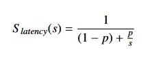
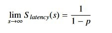
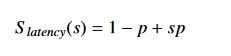
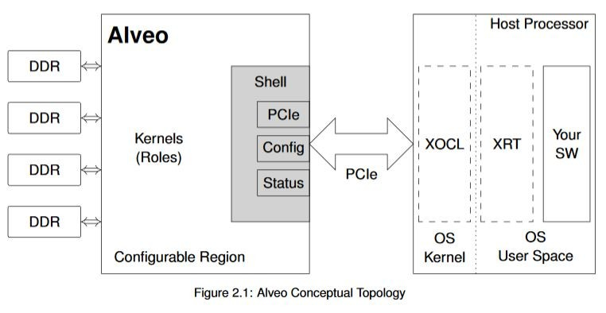
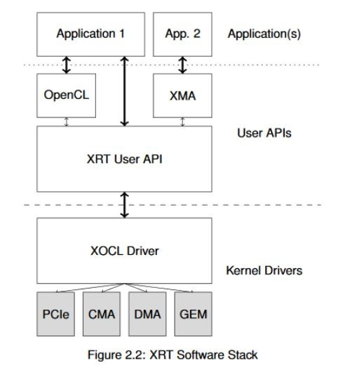

2020.2 Vitis ™ - ランタイムおよびシステムの最適化 - アクセラレーションの基礎xilinx.com の Vitis™ 開発環境を参照 |
アクセラレーションの概念¶
ここでは、すぐに API についての説明を始めるのではなく、アクセラレーションの開発経験があまりない開発者のために、簡単な比喩を使用して、アクセラレーション システムで何が起こる必要があるのかを説明します。
たとえば、自分の住んでいる街のツアー ガイドを任されたとします。その街は、人口密度の高い大都市かもしれませんし、人がまばらに暮らしている小さな町かもしれませんが、どんな街であろうと、その地域の交通ルールに従う必要があります。この「街」が、アクセラレーション システムにおけるアプリケーション空間に相当します。ツアーでは、街の歴史や地理などの地域情報を説明したり、観光名所や商店に参加者を案内したりします。このようなツアー ガイドとしてやらなければならない仕事が、アルゴリズムにあたります。
アプリケーション空間とアルゴリズムを考慮して、小規模で開始します。ツアーの参加者は、最初は 1 台の車に収まる程度の人数ですが、毎年より大型で高速の車を購入していきます。ツアーの人気はしだいに高まり、参加申込者は増える一方です。ツアー用にスポーツ カーを買ったとしても、街を案内するスピードには限界があります。さらに事業を拡大するにはどうしたら良いでしょうか。これが CPU アクセラレーションの問題です。
その答えはツアーバスです。スポーツ カーに比べれば、バスの最高速度は低いですし、乗客の乗り降りにも時間がかかりますが、スポーツ カーよりずっと多くの人を乗せられます。つまり、アルゴリズムでより多くのデータを処理できるということです。ツアー バスの台数を増やしていけば、さらに多くのツアー客に対応できるようになります。これが、GPU アクセラレーションのモデルです。このモデルでツアー事業は順調に拡大していきますが、ガソリン代がかさみ始め、観光名所の 1 つである噴水の前では交通渋滞が慢性的に起こるようになり、しかもこの街でワールドカップが開催されることが決まりました。
モノレールでも建設しなければ、ツアー事業は頭打ちです。そこで街の税金が投入され、モノレール建設が許可されました。モノレールは、どの車両も満席で、すべての観光名所に停車します。しかも、必要に応じてブルドーザーを使用して路線を変更できる柔軟性もあります。この比喩では説明が厳しくなってきましたが、ツアー ガイドとしてはこれは夢の世界です。でも、これこそが Vitis アクセラレーションのモデルなのです。FPGA は、GPU の並列処理と、ドメイン特化アーキテクチャのレイテンシの短いストリーミングを組み合わせ、これまでにないパフォーマンスを実現します。
ところが、古い冗談にもあるように、いくらフェラーリでも、運転手がギアの変え方を知らなければスピードは出せません。比喩を使った説明はここまでにして、ここからは実際のアクセラレーションについて学んでいきます。
アクセラレーションを利用可能な部分の特定¶
システムでは通常、パフォーマンス ターゲットを設定します。そのターゲットは、全体的なエンド トゥ エンドのレイテンシ、1 秒ごとのフレーム数、スループットなどで設定されます。
一般的に、アクセラレーションの候補となるのは、確定的な方法で大量データを処理するアルゴリズム処理ブロックです。1967 年、ジーン・アムダールという人が「アムダールの法則」として知られる理論を提唱しました。この法則では、システム内で達成可能な高速化は次の式で表されます。

この式で、S_latency はタスクの理論上の高速化、s はアクセラレーションで効果が得られるアルゴリズムの部分、p はアクセラレーションを適用する前にそのタスクの実行にかかった時間を表わします。
アムダールの法則は、アプリケーションにおけるアクセラレーションの効果には明らかな限界があることを示しています。これは、アクセラレーションできない部分のタスク (意思決定タスク、I/O などのシステム オーバーヘッドになるタスク) がシステムのボトルネックになるからです。

アムダールの法則が正しいのであれば、現代のシステムの多くに汎用またはドメイン特化アクセラレーションが使用されているのはなぜでしょうか。現代のシステムでは、処理されるデータ量はしだいに増えていますが、アムダールの法則はサイズが決まっている場合にしか適用できません。つまり、限界が存在するのは、p が全体的な実行時間に対して一定であるからです。1988 年に、ジョン・グスタフソンとエドウィン・バルシスがアムダールの法則を改良した法則 (グスタフソンの法則) を提唱しました。この法則では、式は次のようになります。

S_latency はタスクの理論上の高速化、s は並列処理の効果を得ることができるタスクの高速化 (レイテンシ)、p はアプリケーションに改良を加える前の全体的なタスク レイテンシに占める割合を表わします。
グスタフソンの法則は、より多くの演算リソースを使用して 1 つのタスクの実行時間を高速化しようとするアムダールの法則とは異なり、より多くの演算リソースを使用して同じ時間内により多くの演算を実行できるようにします。
どちらの法則も、アプリケーションを高速化させるためには、並列処理が必要であることを示しています。つまり、並列処理によって、同じ時間内でより多くのデータを処理しようとするか、同じデータ量をより短い時間で処理しようとしているわけです。どちらの方法にも数学的な限界がありますが、より多くのリソースを使用することで、程度の違いはありますが、どちらも利益が得られます。
一般的には、FPGA および ACAP は、大きなデータ セットで大量の計算を実行するアルゴリズム (ビデオ トランスコーディング、ファイナンス分析、ゲノム解析、機械学習などの大型データ ブロックを並列処理可能なアプリケーション) で効果を発揮します。アクセラレーションに取り組む際は、ソフトウェアのアルゴリズムに外部アクセラレーションをどのように、いつ適用するのかを理解することが重要です。FPGA を使用する場合でも、それ以外のものを使用する場合でも、アクセラレータにランダムなコードを挿入しただけでは通常は最適な結果は得られません。その理由は 2 つあります。1 つは、アクセラレーションを活用して並列処理部分を増やすには、順次アルゴリズムの構成を変える必要がある場合があること、もう 1 つは、FPGA アーキテクチャでは並列データを高速に処理できますが、PCIe 上での DDR メモリとのデータ転送には追加レイテンシがあることです。この追加レイテンシは、ヘテロジニアス アクセラレータとデータを共有するために支払う必要のある一種の「アクセラレーション税」だと考えることができます。
これを考慮して、次の条件を満たすコード部分を見つけます。これらの箇所は次の条件を満たしている必要があります。
確定的な方法で大きなデータ ブロックを処理する。
データの依存関係が明確に定義されており、順次処理またはストリーム ベースの処理を使用する。範囲を制限できる場合以外は、ランダム アクセスは回避することをお勧めします。
処理に時間がかかり、CPU とアクセラレータ間のデータ転送のオーバーヘッドがアクセラレータの実行時間を支配しない。
Alveo の概要¶
ソフトウェアの説明に入る前に、Alveo データセンター アクセラレータ カード自体の機能について説明します。各 Alveo カードは、アクセラレーション用の FPGA または ACAP、広帯域幅 DDR4 メモリ バンク、高帯域幅の PCIe リンクを介するホスト サーバーへの接続の 3 つの基本エレメントで構成されています。このリンクは、Alveo カードとホストとの間で Gen3x16 では毎秒約 16 GiB のデータ、新しい世代ではより高いレートでデータを転送できます。
CPU、GPU、または ASIC とは異なり、FPGA は実質的にブランク状態のチップです。FPGA は、フリップフロップ、ゲート、SRAM などの下位ロジックのリソースをまとめたものですが、固定の機能はほとんどありません。デバイスのすべてのインターフェイスは、PCIe や外部メモリ リンクも含め、これらのリソースの少なくとも一部使用してインプリメントされます。
PCIe リンク、システムのモニター機能、ボードの状態をチェックするインターフェイスを常にホスト プロセッサで使用できるようにするため、Alveo デザインは概念的にシェルと役割の 2 つの部分に分けられます。シェル部分には、外部リンク、コンフィギュレーション、クロッキングなどのスタティック機能がすべて含まれます。役割部分には、デザイン特定のアルゴリズムをインプリメントするカスタム ロジックが含まれます。次の図にこのトポロジを示します。

Alveo FPGA の内部は、さらに複数の SLR (Super Logic Region) に分かれており、高パフォーマンス デザインのアーキテクチャで有益です。これは上級トピックであり、Alveo の開発に初めて着手する場合は気にする必要はありません。
Alveo カードには複数のオンカード DDR4 メモリがあります。これらのメモリは、広帯域幅で Alveo デバイスと通信し、OpenCL のコンテクストでは「デバイス グローバル メモリ」と呼ばれます。各メモリ バンクのデータ容量は 16 GiB で、2400 MHz DDR で動作します。このメモリは非常に広帯域幅なので、カーネルを簡単に飽和させることができます。ただし、このメモリの読み出しまたは書き込み操作を実行する際にレイテンシが発生し、特に不連続のアドレスにアクセスする場合や、短いデータ ビートを読み出したり書き込んだりする場合に、影響があります。
一方、PCIe レーンの帯域幅は十分に広いのですが、Alveo カード自体の DDR メモリの帯域幅ほどではありません。また、PCIe 上でのデータ転送のレイテンシは非常に長くなります。PCIe 上でのデータ転送は、最小限に抑えることをお勧めします。連続データを処理する場合は、カーネルが別の処理を実行している間にデータを転送するようなシステムを構築してみてください。たとえば、Alveo がビデオの 1 フレームを処理している間に、次のフレームを CPU からグローバル メモリに転送するなどです。
FPGA アーキテクチャおよび Alveo カード自体についてさらに詳細に説明することもできますが、この資料では概要を紹介することが目的なので、基本的な情報はここまでにします。アクセラレーション アーキテクチャを設計するという観点から言えば、重要な点は次のとおりです。
PCIe 上でのデータ転送は、最新世代であってもレイテンシが長くなります。大量のデータ転送では、帯域幅がシステムのボトルネックになる可能性があります。
DDR4 と FPGA 間の転送は、PCIe 上での転送と比較して帯域幅およびレイテンシの面ではかなり良いですが、外部メモリを使用すると、全体的なシステム パフォーマンスに影響します。
FPGA ファブリック内では、1 つの操作から次の操作へのストリーミングに実質的なコストはかかりません。これが先ほどのモノレールの比喩にあたります。これについては、後ほど詳しく説明します。
ザイリンクス ランタイム (XRT) および API¶
ハードウェア アクセラレーション システムは、大まかには、ハードウェアのアーキテクチャおよびインプリメンテーションと、そのハードウェアと通信するソフトウェアの 2 つの部分で説明できます。Vitis では、アプリケーションに FFmpeg や Gstreamer などの上位ソフトウェア フレームワークを使用していても、Alveo ハードウェアと通信するソフトウェア ライブラリはザイリンクス ランタイム (XRT) です。
XRT は多くのコンポーネントで構成されていますが、その主な役割は次の 3 つです。
FPGA/ACAP カーネルのプログラムとハードウェアのライフサイクルの管理
メモリ割り当てと、ホストの CPU とカード間でのそのメモリの移動
ハードウェア操作の管理: カーネル実行のシーケンス、カーネル引数の設定など
上記の操作は、FPGA 上でのコストが高い順にリストしています。さらに詳しく見てみます。
カーネルのプログラムには、ある程度時間がかかります。コンフィギュレーション イメージを転送する PCIe 帯域幅など、FPGA の性能にもよりますが、プログラムにかかる時間はおおよそ数十ミリ秒から数百ミリ秒です。これは通常はアプリケーションを起動したときに 1 回だけ実行される操作なので、コンフィギュレーション時間はセットアップ レイテンシとして吸収されますが、これを認識しておくことは重要です。アプリケーションによっては、異なる大型のカーネルを提供するため、Alveo が複数回再プログラムされるものもあります。そのようなアーキテクチャを構築する場合は、コンフィギュレーション時間をアプリケーションにできる限りシームレスに組み込む必要があります。また、多くのアプリケーションで同時にハードウェアを使用することは可能ですが、1 回にプログラムできるのは 1 つのイメージのみであることに注意してください。
XRT が真価を発揮できるのは、メモリの割り当てとメモリの移動です。メモリを効率よく割り当てて管理することは、アクセラレーション アーキテクチャを開発する上で非常に重要です。メモリおよびメモリの移動を効率よく管理しないと、アプリケーションの全体的なパフォーマンスに大きく影響します。XRT には、メモリと通信するための機能が多数あります。これらの機能については、後ほど説明します。
最後に、XRT は、カーネル引数を設定し、カーネル実行フローを管理することにより、ハードウェアの操作を管理します。カーネルは、1 つまたは多数のプロセスから、順次または並列に、ブロッキング方式またはノンブロッキング方式で実行できます。ソフトウェアとカーネルの通信方法はユーザーが制御できます。この資料の後の方で、その制御方法をいくつか説明します。
XRT は下位 API です。アドバンス ユース モデル、または一般的でないユース モデルを使用している場合は、XRT と直接通信する方がよいかもしれませんが、OpenCL、ザイリンクス メディア アクセラレータ (XMA) フレームワークなどの上位 API が使用されるのが一般的です。次の図に、使用可能な API の概要を示します。この資料では、OpenCL API を中心に説明します。ザイリンクスでは FPGA に特化したタスク用の拡張機能を提供していますが、OpenCL を使用したことがあれば、ほぼ同様です。

次のセクションでは、アプリケーションを最適化するために理解する必要があるメモリ管理の基本概念を説明します。
Copyright© 2019-2021 Xilinx